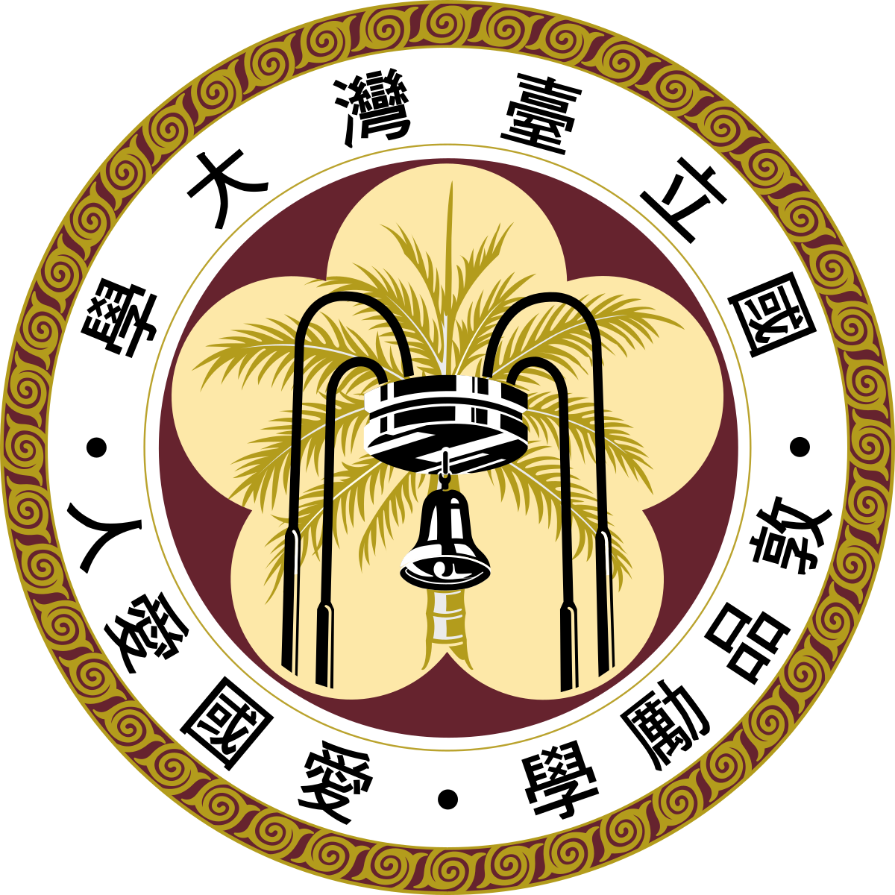
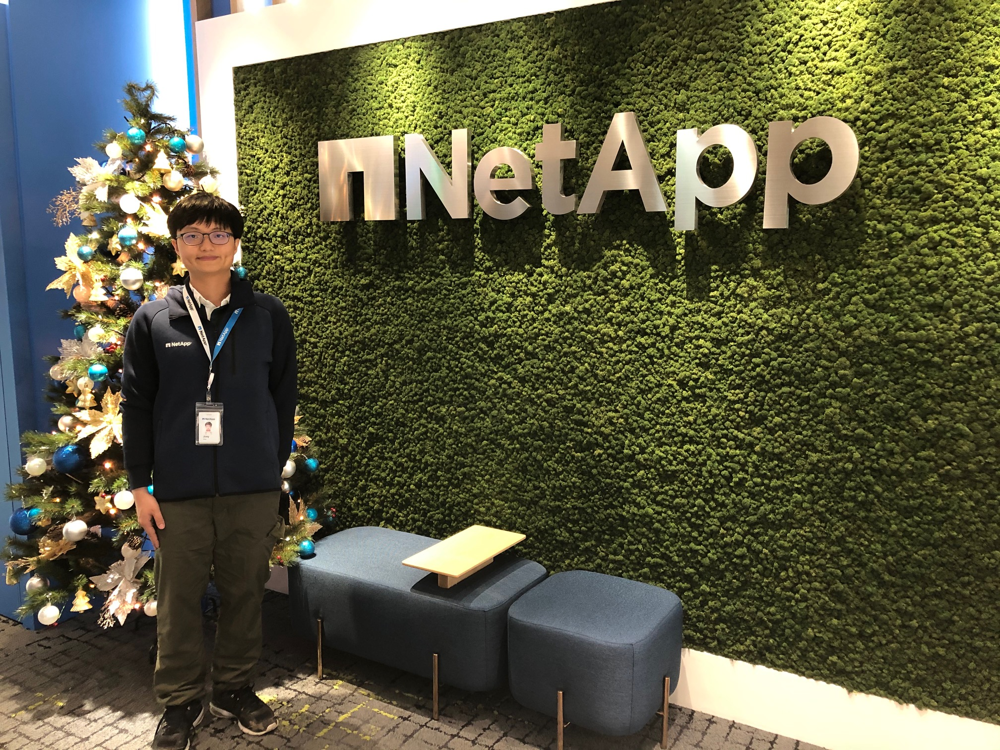
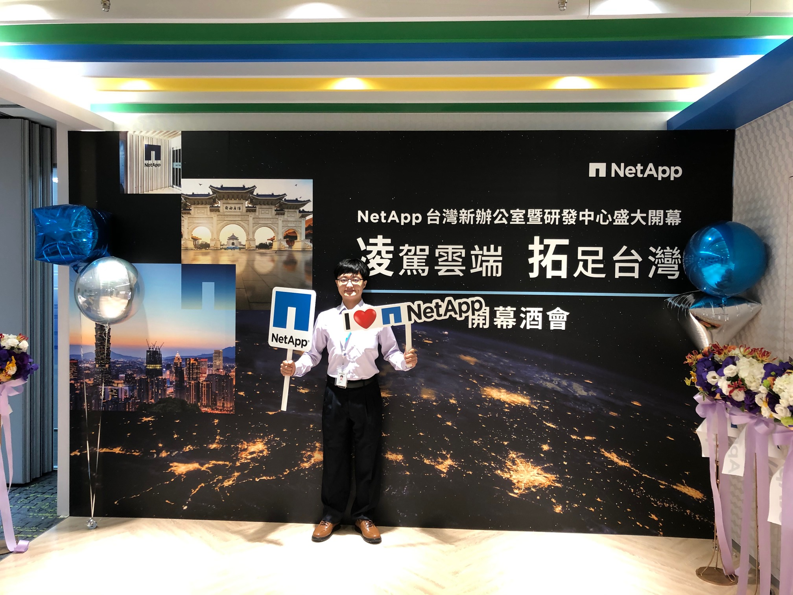
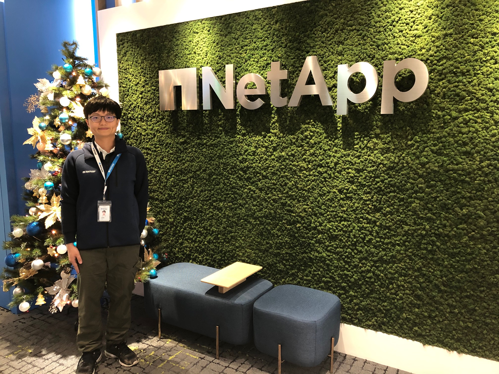
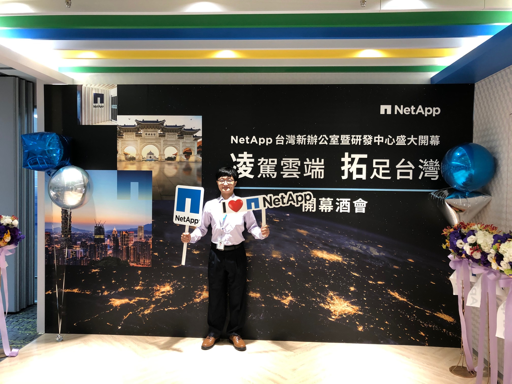

Hung Yi Chen
[News] Start my new journy as Master of Computer Science student at Texas A&M Univeristy
Passionate Software Developer | Diverse Background and Experiences in Computer Engineering | Proactive, Responsible and Self-Motivated.
M.Sc. student in Computer Science
@Texas A&M Univeristy
Jan. 2020 - Current
Expect to graduate in 2021
Software Development Engineer
@NetApp Inc.
Apr. 18 - Jan.20

M.Sc. in Electrical and Computer Engineering
@National Taiwan University
Sep. 11 - Feb.15
B.Sc. in Electrical and Computer Engineering
Sep. 11 - Feb.15
Currently starting as a student in Master of Computer Science in Texas A&M University.
I had worked as a software developer at NetApp Inc. for around 2 years, where I proposed diagnostic software and automation test procedures to automate system level validations.
Not only interested in infrastruce or system, it's extremely passionated for me to dedicate in kinds of software development and much motivated to learn as much as possible.
A proactive, responsible and self-motivated learner.
Here is my curriculum vitae, last upadated July 2020.
TECHNICAL SKILLS
- Programming skills
C/C++, Python, Matlab, Perl, Bash/Linux, R, Git, SQL.
- Web Design skills
Django, Ruby on Rails, HTML, CSS, Javascript.
- Domain Knowledge
Computer Vision, Image Processing, Machine Learning, Automation Tests, Linux
Projects
- Improved Arithmetic Codec for Image and Video Signals (Matlab)
1. Achieved 8.45%, 11.5% efficiency improvements for video and image signals, by proposed arithmetic coding algorithm.
2. Proposed algorithms can be used in improving the efficiency of JPEG, JPEG2000, H264 standard codec.
Project Link - Continuous Phase Frequency Shift Keying Communication System (C/C++/Matlab)
1. Used Matlab implementation to verify the practicality of CPFSK modulation.
2. Proposed wired channel and antenna solutions based on C/C++ language and TI OMAP processor.
3. Achieved best channel error rate performance (12.39%) among 15 groups in the lab contest under strong noise environment.
4. Acted as software lead and developer in two-person team.
Project Link - Information Retrieval to Real World Problems (Python)
1.Built recommender and ranking systems to solve real world problems including data from Twitter, Quizlet, Microsoft Research Center.Project Link
2.Utilizing methods including Word2Vec, SVM, Implicit Feedbacks. - The Culprits of flight delays: What causes flight delays? (Python)
1. Identified critical delay factors to flights in the BTS dataset and outperforms the baseline model with the lowest loss value based on the DNN model. Analyzed improvements for preventing future flight delays.
2. Features included delay feature visualizations, ridge regression and deep neural model prediction.
Project Link
Honor_and_Award
- Outstanding Employee of the Month (2019.01)
1. Pushed the product release a week ahead of schedule (8% among the final phase) on diagnosis modules of NetApp product AFF-A320.
NetApp AFF-A320 Product Introduction (NVMe Building Block for the Modern SAN) - MOST–DAAD Research Scholarship (2017.07)
1. Research scholarship from the German Academic Exchange Service (DAAD) and the Ministry of Science and Technology (MOST Taiwan).Program Link
2. Conducted my research as a Software Developer Intern at Fortiss GmbH, focusing on the Formal Verification of Quantized Neural Networks. - National Taiwan University Class-A Teaching Assistantship (2015-2016)
1. Selected top 10% well-behaved students to serve as a teaching assistant at Department of Electrical Engineering, National Taiwan University.
2. Working contents including: TA-office-hour tutoring, designing assignments and exams grading. - National Chiao-Tung University Academic Achievement Awards (2013)
Top 5% students among the whole department in both 2013 Spring and Fall semester.
Publications
- Improved Efficiency on Adaptive Arithmetic Coding for Data Compression Using Range-adjusting Scheme, Increasingly Adjusting Step, and Mutual Learning Scheme
IEEE Transactions on Circuits and Systems for Video Technology (TCSVT), 2018.Publication Link
- Novel Adaptive Rood Path Searches with Small Motion Prejudgments for Fast Block Motion Estimation
IEEE Asia Pacific Conference on Circuits and Systems (APCCAS), 2018.Publication Link
- Advanced one-bit transform algorithm with edge enhancement and representative feature extraction for low-complexity and accurate motion estimation
IEEE Region 10 Conference (TENCON), 2017.Publication Link
Activities
- NetApp Press Conference (2019 Dec.)
Joined NetApp Press Conference for presenting new NetApp's strategies in Taiwan, taking charge of reception for customers from Academia and Original Design Manufacturer.
- Reception volunteer for PhD Muhammad Yunus (2019 Nov.)
PhD Muhammad Yunus visited Taoyuan city to promote his ideas in November. As a reception volunteer, I co-worked with Social Enterprise Center of Taoyuan, in order to introduce our current efforts to PhD Yunus, and received useful suggestions from this Nobel Prize winner
 


